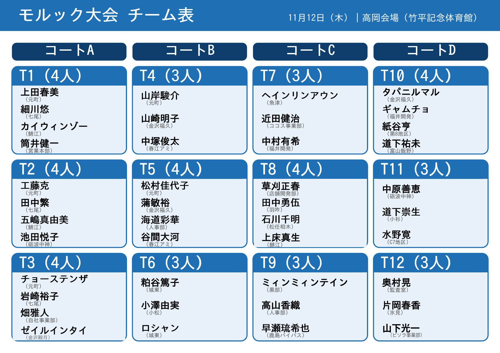
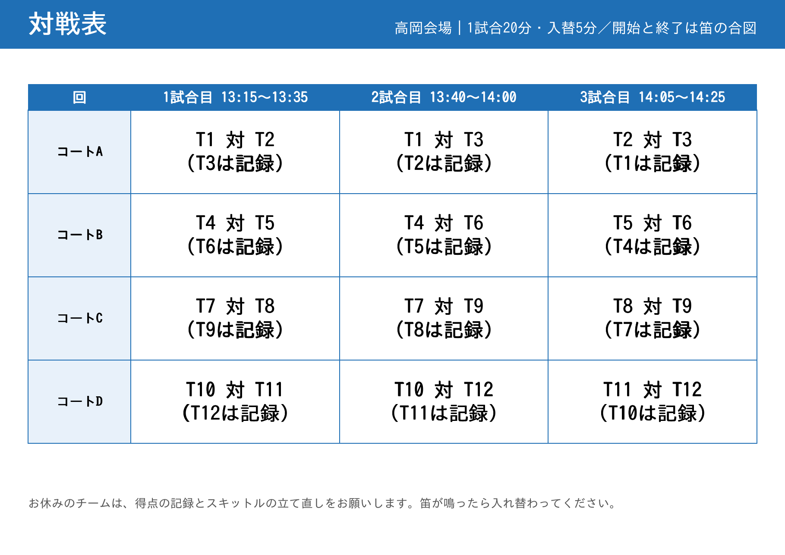
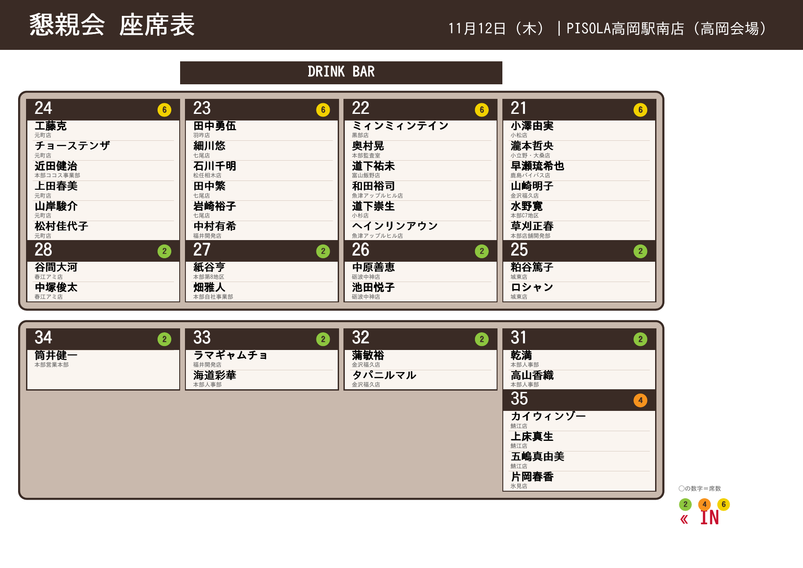

ごあいさつ
本日は、お忙しいなか「労使共同イベント」にご参加いただき、ありがとうございます。
会社と組合、職場や立場の垣根をこえて、笑顔で体を動かし、顔を合わせて語り合う一日にしたいと思っています。勝ち負けよりも、楽しむこと、そして声をかけ合うことを大切にしてください。
無理のない範囲で、けがのないよう、楽しくお過ごしください。
会社と組合、職場や立場の垣根をこえて、笑顔で体を動かし、顔を合わせて語り合う一日にしたいと思っています。勝ち負けよりも、楽しむこと、そして声をかけ合うことを大切にしてください。
無理のない範囲で、けがのないよう、楽しくお過ごしください。
ファイブスター労働組合 中央執行委員長 石原 崇弘
モルックのかんたんルール
🎯 目的：ちょうど50点をめざす
投げ棒（モルック）を下から投げて、1〜12の番号がついたピンを倒して得点を重ねます。
投げ棒（モルック）を下から投げて、1〜12の番号がついたピンを倒して得点を重ねます。
投げ方
- ピンの前の線から、下手投げで投げます（体の横から、ゆるやかに）。
- チームで順番に1人ずつ投げます。
点数の数え方
- 1本だけ倒れた→ そのピンの番号が得点（例：「8」が倒れたら8点）
- 2本以上倒れた→ 倒れた本数が得点（例：3本倒れたら3点）
- 倒れたピンは、倒れた場所で立て直してから次の人が投げます。
勝ち方・注意点
- 先にちょうど50点になったチームの勝ちです。
- 50点を超えたら25点に戻ります。
- 1本も倒せない「ミス」が続くと、そのチームは失格になる場合があります（大会ルールは司会の説明に従ってください）。
合図と安全
- 開始と終了の合図は「笛」です。笛が鳴るまで、投げ始めないでください。
- 投げる人の前には入らない。ほかのコートのようすにも注意しましょう。
- 体調が悪いときや、けがをしたときは、すぐスタッフに声をかけてください。
※当日の細かなルールや進め方は、司会がご案内します。
チーム表
チーム表（コートA〜D・全12チーム＋対戦表）
🔍 拡大／縮小チーム表（1/2）

対戦表（2/2）

画像は指でスクロールすると全体が見られます。「拡大／縮小」で大きさを変えられます。
懇親会の座席表
会場：PISOLA高岡駅南店（高岡会場） ※お席は卓番号でご案内します。
お名前で探す
座席表（全体）
🔍 拡大／縮小
席はスタッフがご案内します。お席のご都合・体調などは、お近くのスタッフへお知らせください。
アンケート
今後のイベントの参考にしますので、2〜3分ほどでご協力ください。回答は個人が特定されない形で集計します。
アンケートに答える（準備中）おわりに
本日は最後までご参加いただき、ありがとうございました。
皆さまのご協力のおかげで、たくさんの笑顔と交流が生まれました。いただいたご意見は、今後の活動に活かしてまいります。
お気をつけてお帰りください。
皆さまのご協力のおかげで、たくさんの笑顔と交流が生まれました。いただいたご意見は、今後の活動に活かしてまいります。
お気をつけてお帰りください。